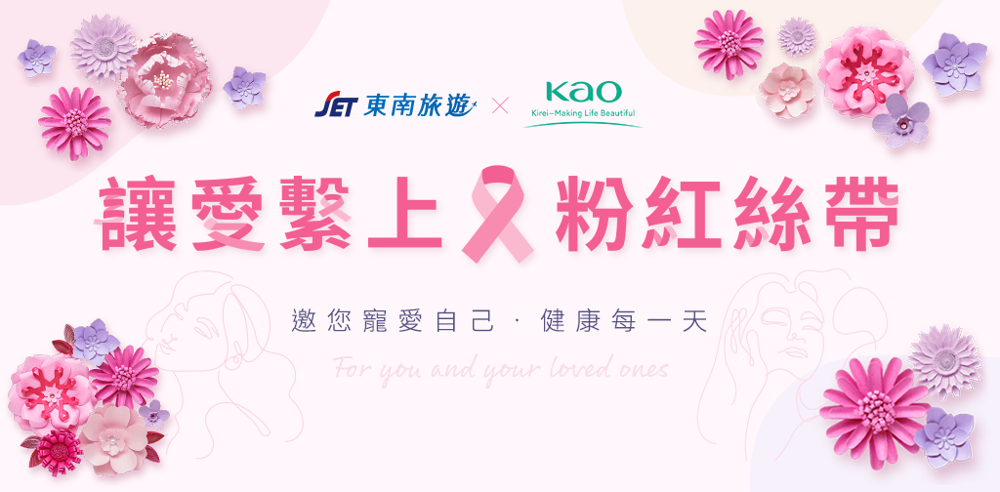

東南旅遊、花王集團，
攜手響應粉紅絲帶活動。
您報名旅遊，我們將捐出部分團費
給乳癌防治基金會。
讓我們關心自己，也關心更多的人
寵愛之旅溫馨好禮
參加報名下列商品，即可獲得
獨家「花王寵愛包」(圖)
10/27後出團開始贈送，數量有限 送完為止。
Biore溫和水嫩洗面乳15g | 美舒律蒸氣眼罩試用包1片裝 | Biore A極效防曬乳10ml
蘇菲娜透美顏飽水控油雙效化妝水體驗包 1.2mlx6
粉紅有愛你我做起
參加報名下列商品，東南旅遊
將捐贈部分團費 至 乳癌防治基金會
讓我們為乳癌防治，一同加油!
關愛自己及所愛之人
乳癌是怎樣的疾病？
乳癌是出現在乳腺上皮組織的惡性腫瘤，發病初期往往沒有明顯可察覺的臨床症狀，
也不會疼痛，不易引起關注而延遲診斷及就醫。乳癌主要症狀表現為乳腺腫塊。
其它的症狀可能會有乳頭出現不正常分泌物，特別是透明或帶血分泌物要特別留意。
或者乳房皮膚紅腫、 凹陷、 橘皮變化及腋下腫塊等等。
盡早發現乳房的細微變化以防患於未然。
並養成健康生活型態、 藉由均衡飲食與運動理想體重控制，珍視乳房健康，
定期乳癌篩檢是遠離乳癌的不二法門。
乳腺的組織構造
如何自我檢測
除乳房以外， 同時仔细檢査乳房下部，鎖骨以及腋下部位是否有腫塊或異常。
洗澡時進行觸摸檢查
在塗有沐浴乳等潤滑的肌膚上進行。
用三根手指劃小圓圈的方式按摩按壓。
左乳房用右手，
右乳房用左手按摩按壓。
鏡前自我觀察
如圖手腕抱頭仔細觀察乳頭，
乳暈是否有異常。
如圖雙手插腰再次觀察乳房
是否有異常或雙側乳房突然差異變大。
請養成在月經開始一週後，
或停經後也進行每月一次的自我檢查。
如發現有任何異常
請盡快去各大醫院做進一步篩檢。
醫院的影像學檢査對於乳癌的早期發現非常重要。
除乳房以外， 同時仔细檢査乳房下部，鎖骨以及腋下部位是否有腫塊或異常。
影像學檢查
通常會進行乳房X光攝影（乳腺鉬靶）
必要時醫師會輔以超音波檢査。
通過病理檢查確診乳癌
有癌症可疑情況下， 最後通過細胞病理檢査進行確診。目前政府提供45-69歲或40-44歲二等親有乳癌家族史者，亦可享每兩年一次免費乳房X光攝影檢査。
花王（台灣）股份有限公司、乳癌防治基金會